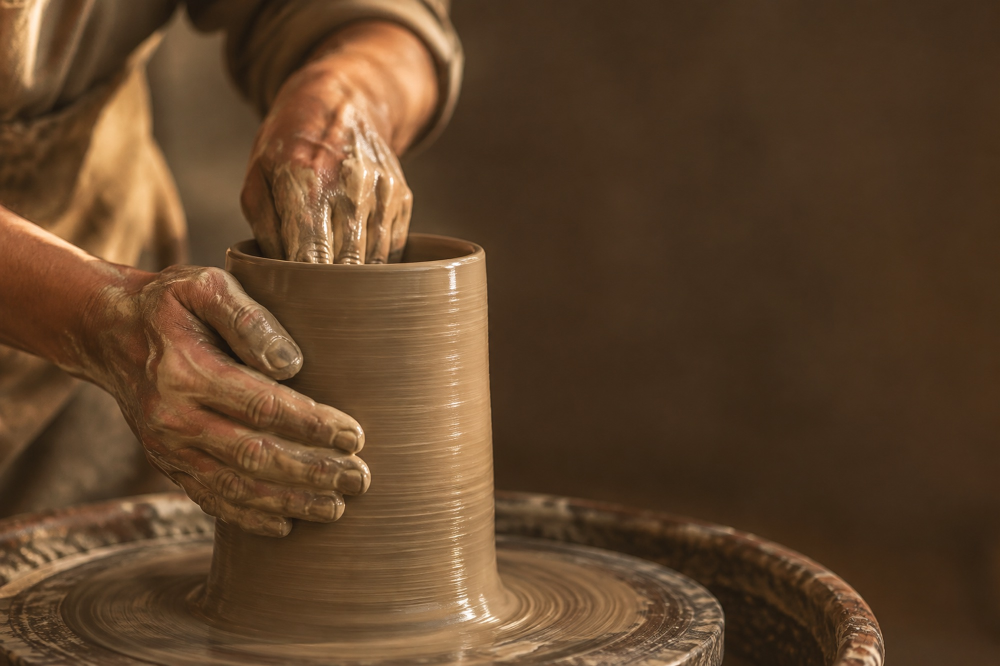
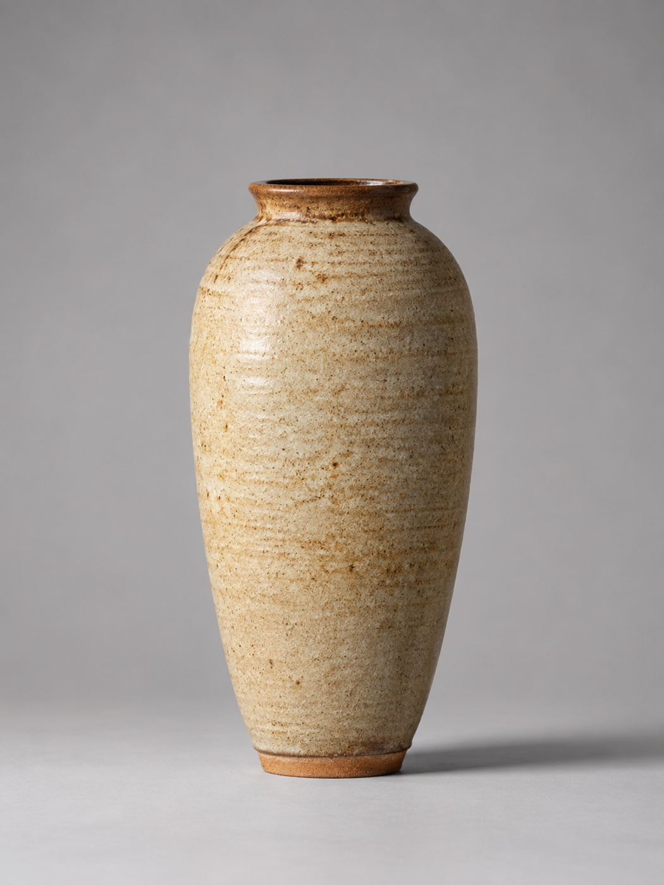
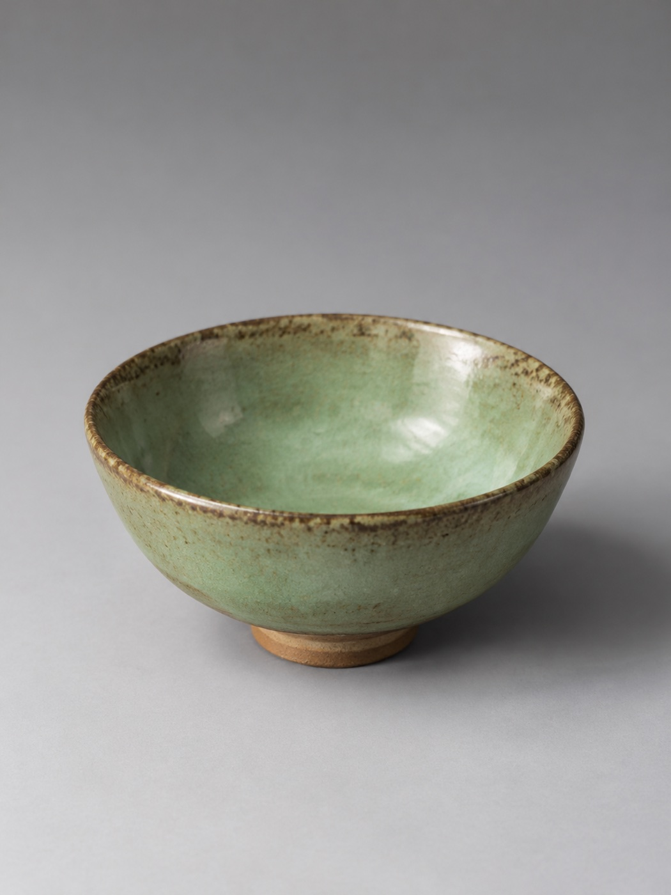
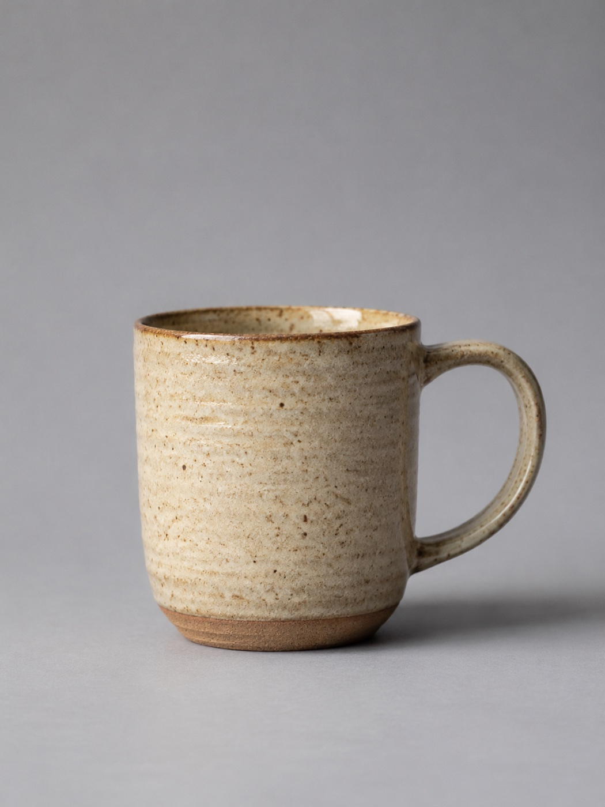
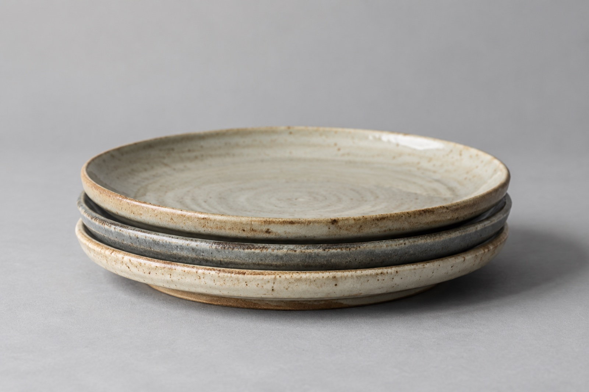
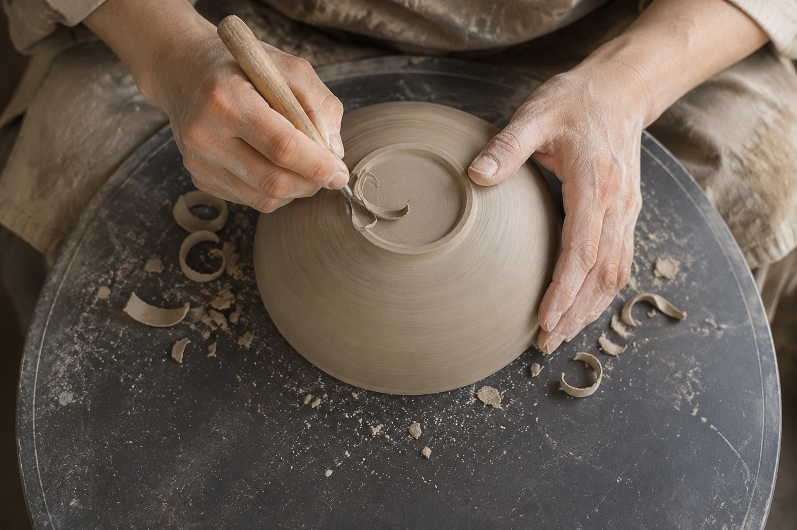
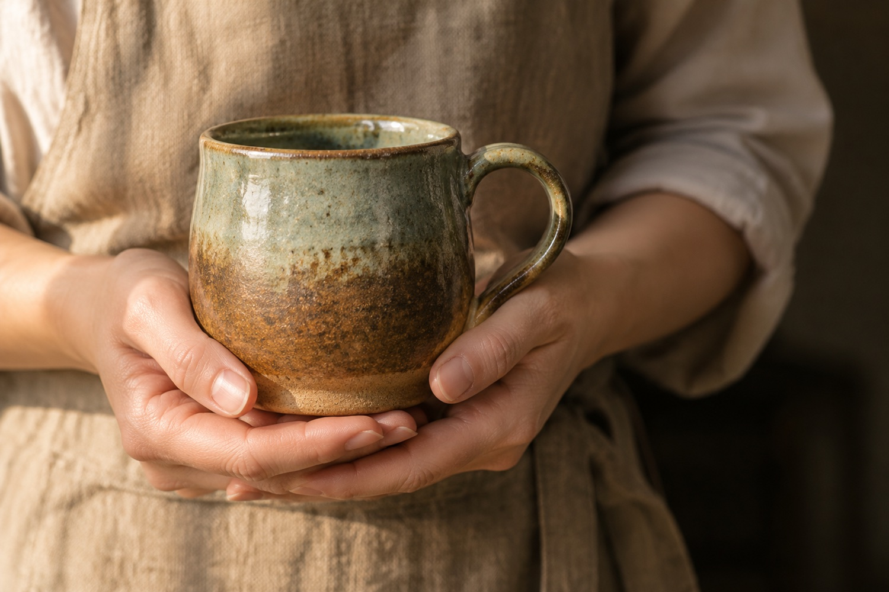
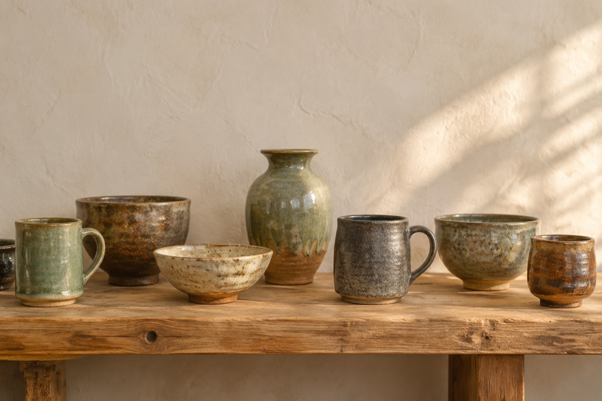

One pair of hands, one pot at a time.
A one-person studio throwing small-batch stoneware for the table — mugs, bowls, plates and vases, each one of a kind.
Every piece is thrown by hand, on a wheel, by one person — so no two are ever quite the same.
A factory presses out the same cup until it stops counting. Here the count is one, then one, then one.
Recent pieces, mounted like plates in a catalogue.




These are recent pieces, shown to give a feel for the hand and the glazes. The shelf you actually shop from is small and changes on the first of each month.
From a lump of clay to stoneware for good.


Thrown on the wheel
Every piece starts as a ball of stoneware clay, centred and pulled up by hand on the wheel — one at a time.
Trimmed and dried
Once it's leather-hard, the foot is trimmed, the piece dries slowly, then it's bisque-fired to set the clay.
Glazed by hand
Each pot is glazed by hand in lead-free glazes. No two take the glaze in exactly the same way.
Fired to 1240°C
A final glaze firing to 1240°C turns it to dense, hard stoneware — safe for the dishwasher and the microwave.

A new small collection, the first of every month.
On the first, a handful of new pieces go up. It's a small batch, made to order, and it tends to sell out. When this month's is gone, the next one arrives on the first.
$28–$120 · made to order · ships in about two weeks
Made to be used, not shelved.
- Dishwasher & microwave safe
- Fired dense and glazed to live in daily use, not behind glass.
- Lead-free glazes
- Every glaze is lead-free.
- Fired to 1240°C
- A high stoneware firing makes each piece hard and dense.
- Made to order
- Pieces are made for you and ship in about two weeks.
- 30-day returns
- If a piece isn't right, send it back within 30 days.
- No subscription
- Nothing recurring. Buy a piece when you want one, and no more.
This month's pots are on the shelf.
Small batch, one of a kind, gone when they're gone.
Shop this month's pots